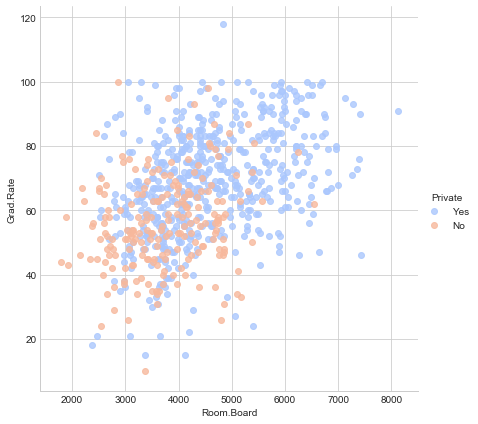
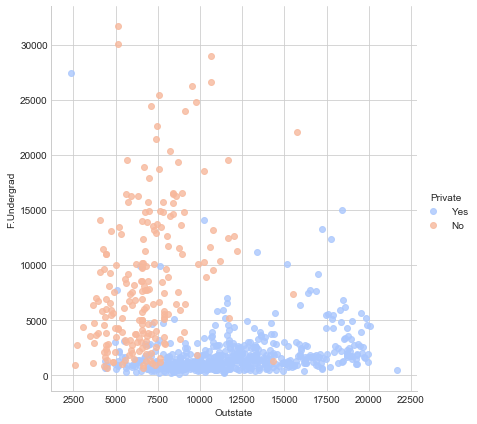
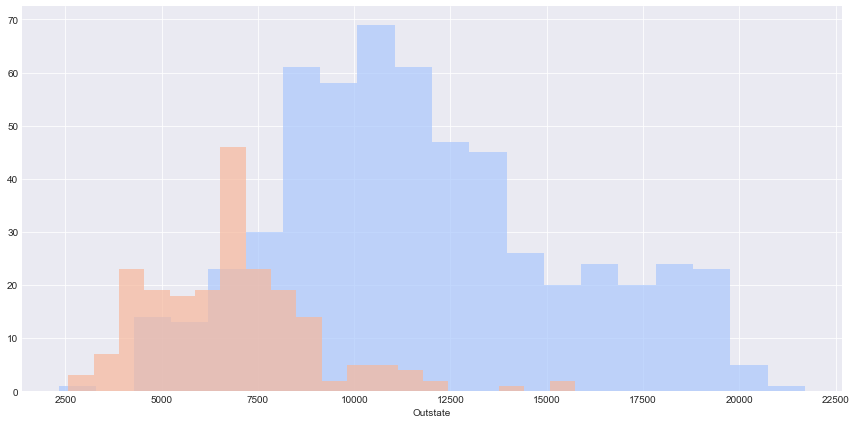
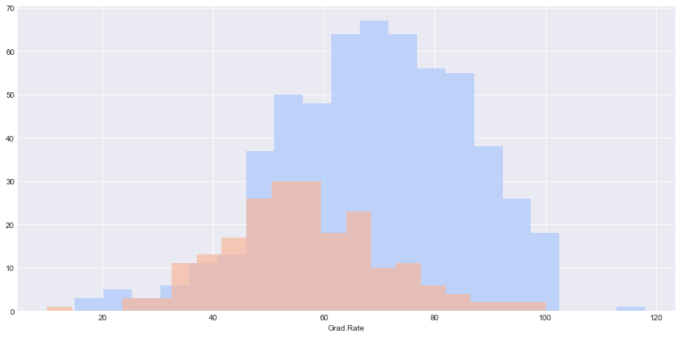
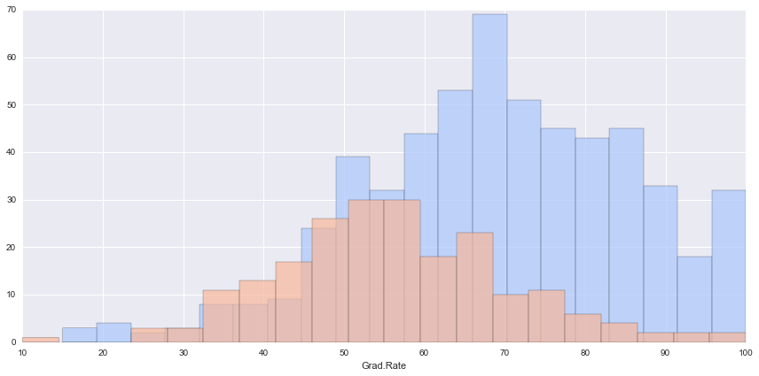

K Means Clustering University Clusters
We will attempt to use KMeans Clustering to cluster Universities into to two groups, Private and Public.
It is very important to note, we actually have the labels for this data set, but we will NOT use them for the KMeans clustering algorithm, since that is an unsupervised learning algorithm.
When using the Kmeans algorithm under normal circumstances, it is because you don’t have labels. In this case we will use the labels to try to get an idea of how well the algorithm performed, but you won’t usually do this for Kmeans, so the classification report and confusion matrix at the end of this project, don’t truly make sense in a real world setting!.
The Data
We will use a data frame with 777 observations on the following 18 variables. * Private A factor with levels No and Yes indicating private or public university * Apps Number of applications received * Accept Number of applications accepted * Enroll Number of new students enrolled * Top10perc Pct. new students from top 10% of H.S. class * Top25perc Pct. new students from top 25% of H.S. class * F.Undergrad Number of fulltime undergraduates * P.Undergrad Number of parttime undergraduates * Outstate Out-of-state tuition * Room.Board Room and board costs * Books Estimated book costs * Personal Estimated personal spending * PhD Pct. of faculty with Ph.D.’s * Terminal Pct. of faculty with terminal degree * S.F.Ratio Student/faculty ratio * perc.alumni Pct. alumni who donate * Expend Instructional expenditure per student * Grad.Rate Graduation rate
Import Libraries
** Import the libraries you usually use for data analysis.**
import pandas as pd
import numpy as np
import matplotlib.pyplot as plt
import seaborn as sns
%matplotlib inlineGet the Data
** Read in the College_Data file using read_csv. Figure out how to set the first column as the index.**
df = pd.read_csv('College_Data',index_col=0)Check the head of the data
df.head()| Private | Apps | Accept | Enroll | Top10perc | Top25perc | F.Undergrad | P.Undergrad | Outstate | Room.Board | Books | Personal | PhD | Terminal | S.F.Ratio | perc.alumni | Expend | Grad.Rate | |
|---|---|---|---|---|---|---|---|---|---|---|---|---|---|---|---|---|---|---|
| Abilene Christian University | Yes | 1660 | 1232 | 721 | 23 | 52 | 2885 | 537 | 7440 | 3300 | 450 | 2200 | 70 | 78 | 18.1 | 12 | 7041 | 60 |
| Adelphi University | Yes | 2186 | 1924 | 512 | 16 | 29 | 2683 | 1227 | 12280 | 6450 | 750 | 1500 | 29 | 30 | 12.2 | 16 | 10527 | 56 |
| Adrian College | Yes | 1428 | 1097 | 336 | 22 | 50 | 1036 | 99 | 11250 | 3750 | 400 | 1165 | 53 | 66 | 12.9 | 30 | 8735 | 54 |
| Agnes Scott College | Yes | 417 | 349 | 137 | 60 | 89 | 510 | 63 | 12960 | 5450 | 450 | 875 | 92 | 97 | 7.7 | 37 | 19016 | 59 |
| Alaska Pacific University | Yes | 193 | 146 | 55 | 16 | 44 | 249 | 869 | 7560 | 4120 | 800 | 1500 | 76 | 72 | 11.9 | 2 | 10922 | 15 |
** Check the info() and describe() methods on the data.**
df.info()<class 'pandas.core.frame.DataFrame'>
Index: 777 entries, Abilene Christian University to York College of Pennsylvania
Data columns (total 18 columns):
Private 777 non-null object
Apps 777 non-null int64
Accept 777 non-null int64
Enroll 777 non-null int64
Top10perc 777 non-null int64
Top25perc 777 non-null int64
F.Undergrad 777 non-null int64
P.Undergrad 777 non-null int64
Outstate 777 non-null int64
Room.Board 777 non-null int64
Books 777 non-null int64
Personal 777 non-null int64
PhD 777 non-null int64
Terminal 777 non-null int64
S.F.Ratio 777 non-null float64
perc.alumni 777 non-null int64
Expend 777 non-null int64
Grad.Rate 777 non-null int64
dtypes: float64(1), int64(16), object(1)
memory usage: 115.3+ KB
df.describe()| Apps | Accept | Enroll | Top10perc | Top25perc | F.Undergrad | P.Undergrad | Outstate | Room.Board | Books | Personal | PhD | Terminal | S.F.Ratio | perc.alumni | Expend | Grad.Rate | |
|---|---|---|---|---|---|---|---|---|---|---|---|---|---|---|---|---|---|
| count | 777.000000 | 777.000000 | 777.000000 | 777.000000 | 777.000000 | 777.000000 | 777.000000 | 777.000000 | 777.000000 | 777.000000 | 777.000000 | 777.000000 | 777.000000 | 777.000000 | 777.000000 | 777.000000 | 777.00000 |
| mean | 3001.638353 | 2018.804376 | 779.972973 | 27.558559 | 55.796654 | 3699.907336 | 855.298584 | 10440.669241 | 4357.526384 | 549.380952 | 1340.642214 | 72.660232 | 79.702703 | 14.089704 | 22.743887 | 9660.171171 | 65.46332 |
| std | 3870.201484 | 2451.113971 | 929.176190 | 17.640364 | 19.804778 | 4850.420531 | 1522.431887 | 4023.016484 | 1096.696416 | 165.105360 | 677.071454 | 16.328155 | 14.722359 | 3.958349 | 12.391801 | 5221.768440 | 17.17771 |
| min | 81.000000 | 72.000000 | 35.000000 | 1.000000 | 9.000000 | 139.000000 | 1.000000 | 2340.000000 | 1780.000000 | 96.000000 | 250.000000 | 8.000000 | 24.000000 | 2.500000 | 0.000000 | 3186.000000 | 10.00000 |
| 25% | 776.000000 | 604.000000 | 242.000000 | 15.000000 | 41.000000 | 992.000000 | 95.000000 | 7320.000000 | 3597.000000 | 470.000000 | 850.000000 | 62.000000 | 71.000000 | 11.500000 | 13.000000 | 6751.000000 | 53.00000 |
| 50% | 1558.000000 | 1110.000000 | 434.000000 | 23.000000 | 54.000000 | 1707.000000 | 353.000000 | 9990.000000 | 4200.000000 | 500.000000 | 1200.000000 | 75.000000 | 82.000000 | 13.600000 | 21.000000 | 8377.000000 | 65.00000 |
| 75% | 3624.000000 | 2424.000000 | 902.000000 | 35.000000 | 69.000000 | 4005.000000 | 967.000000 | 12925.000000 | 5050.000000 | 600.000000 | 1700.000000 | 85.000000 | 92.000000 | 16.500000 | 31.000000 | 10830.000000 | 78.00000 |
| max | 48094.000000 | 26330.000000 | 6392.000000 | 96.000000 | 100.000000 | 31643.000000 | 21836.000000 | 21700.000000 | 8124.000000 | 2340.000000 | 6800.000000 | 103.000000 | 100.000000 | 39.800000 | 64.000000 | 56233.000000 | 118.00000 |
EDA
It’s time to create some data visualizations!
** Create a scatterplot of Grad.Rate versus Room.Board where the points are colored by the Private column. **
sns.set_style('whitegrid')
sns.lmplot('Room.Board','Grad.Rate',data=df, hue='Private',
palette='coolwarm',size=6,aspect=1,fit_reg=False)<seaborn.axisgrid.FacetGrid at 0x170c52f3f28>

Create a scatterplot of F.Undergrad versus Outstate where the points are colored by the Private column.
sns.set_style('whitegrid')
sns.lmplot('Outstate','F.Undergrad',data=df, hue='Private',
palette='coolwarm',size=6,aspect=1,fit_reg=False)<seaborn.axisgrid.FacetGrid at 0x170c55b5630>

** Create a stacked histogram showing Out of State Tuition based on the Private column. Try doing this using sns.FacetGrid. If that is too tricky, see if you can do it just by using two instances of pandas.plot(kind=‘hist’). **
sns.set_style('darkgrid')
g = sns.FacetGrid(df,hue="Private",palette='coolwarm',size=6,aspect=2)
g = g.map(plt.hist,'Outstate',bins=20,alpha=0.7)
Create a similar histogram for the Grad.Rate column.
sns.set_style('darkgrid')
g = sns.FacetGrid(df,hue="Private",palette='coolwarm',size=6,aspect=2)
g = g.map(plt.hist,'Grad.Rate',bins=20,alpha=0.7)
** Notice how there seems to be a private school with a graduation rate of higher than 100%.What is the name of that school?**
df[df['Grad.Rate'] > 100]| Private | Apps | Accept | Enroll | Top10perc | Top25perc | F.Undergrad | P.Undergrad | Outstate | Room.Board | Books | Personal | PhD | Terminal | S.F.Ratio | perc.alumni | Expend | Grad.Rate | |
|---|---|---|---|---|---|---|---|---|---|---|---|---|---|---|---|---|---|---|
| Cazenovia College | Yes | 3847 | 3433 | 527 | 9 | 35 | 1010 | 12 | 9384 | 4840 | 600 | 500 | 22 | 47 | 14.3 | 20 | 7697 | 118 |
** Set that school’s graduation rate to 100 so it makes sense. You may get a warning not an error) when doing this operation, so use dataframe operations or just re-do the histogram visualization to make sure it actually went through.**
df['Grad.Rate']['Cazenovia College'] = 100C:\ProgramData\Anaconda3\lib\site-packages\ipykernel_launcher.py:1: SettingWithCopyWarning:
A value is trying to be set on a copy of a slice from a DataFrame
See the caveats in the documentation: http://pandas.pydata.org/pandas-docs/stable/indexing.html#indexing-view-versus-copy
"""Entry point for launching an IPython kernel.
df[df['Grad.Rate'] > 100]| Private | Apps | Accept | Enroll | Top10perc | Top25perc | F.Undergrad | P.Undergrad | Outstate | Room.Board | Books | Personal | PhD | Terminal | S.F.Ratio | perc.alumni | Expend | Grad.Rate |
|---|
sns.set_style('darkgrid')
g = sns.FacetGrid(df,hue="Private",palette='coolwarm',size=6,aspect=2)
g = g.map(plt.hist,'Grad.Rate',bins=20,alpha=0.7)
K Means Cluster Creation
Now it is time to create the Cluster labels!
** Import KMeans from SciKit Learn.**
from sklearn.cluster import KMeans** Create an instance of a K Means model with 2 clusters.**
kmeans = KMeans(n_clusters=2)Fit the model to all the data except for the Private label.
kmeans.fit(df.drop('Private',axis=1))KMeans(copy_x=True, init='k-means++', max_iter=300, n_clusters=2, n_init=10,
n_jobs=1, precompute_distances='auto', random_state=None, tol=0.0001,
verbose=0)
** What are the cluster center vectors?**
kmeans.cluster_centers_array([[ 1.81323468e+03, 1.28716592e+03, 4.91044843e+02,
2.53094170e+01, 5.34708520e+01, 2.18854858e+03,
5.95458894e+02, 1.03957085e+04, 4.31136472e+03,
5.41982063e+02, 1.28033632e+03, 7.04424514e+01,
7.78251121e+01, 1.40997010e+01, 2.31748879e+01,
8.93204634e+03, 6.51195815e+01],
[ 1.03631389e+04, 6.55089815e+03, 2.56972222e+03,
4.14907407e+01, 7.02037037e+01, 1.30619352e+04,
2.46486111e+03, 1.07191759e+04, 4.64347222e+03,
5.95212963e+02, 1.71420370e+03, 8.63981481e+01,
9.13333333e+01, 1.40277778e+01, 2.00740741e+01,
1.41705000e+04, 6.75925926e+01]])
Evaluation
There is no perfect way to evaluate clustering if you don’t have the labels, however since this is just an exercise, we do have the labels, so we take advantage of this to evaluate our clusters, keep in mind, you usually won’t have this luxury in the real world.
** Create a new column for df called ‘Cluster’, which is a 1 for a Private school, and a 0 for a public school.**
def converter(cluster):
if cluster=='Yes':
return 1
else:
return 0df['Cluster'] = df['Private'].apply(converter)df.head()| Private | Apps | Accept | Enroll | Top10perc | Top25perc | F.Undergrad | P.Undergrad | Outstate | Room.Board | Books | Personal | PhD | Terminal | S.F.Ratio | perc.alumni | Expend | Grad.Rate | Cluster | |
|---|---|---|---|---|---|---|---|---|---|---|---|---|---|---|---|---|---|---|---|
| Abilene Christian University | Yes | 1660 | 1232 | 721 | 23 | 52 | 2885 | 537 | 7440 | 3300 | 450 | 2200 | 70 | 78 | 18.1 | 12 | 7041 | 60 | 1 |
| Adelphi University | Yes | 2186 | 1924 | 512 | 16 | 29 | 2683 | 1227 | 12280 | 6450 | 750 | 1500 | 29 | 30 | 12.2 | 16 | 10527 | 56 | 1 |
| Adrian College | Yes | 1428 | 1097 | 336 | 22 | 50 | 1036 | 99 | 11250 | 3750 | 400 | 1165 | 53 | 66 | 12.9 | 30 | 8735 | 54 | 1 |
| Agnes Scott College | Yes | 417 | 349 | 137 | 60 | 89 | 510 | 63 | 12960 | 5450 | 450 | 875 | 92 | 97 | 7.7 | 37 | 19016 | 59 | 1 |
| Alaska Pacific University | Yes | 193 | 146 | 55 | 16 | 44 | 249 | 869 | 7560 | 4120 | 800 | 1500 | 76 | 72 | 11.9 | 2 | 10922 | 15 | 1 |
** Create a confusion matrix and classification report to see how well the Kmeans clustering worked without being given any labels.**
from sklearn.metrics import confusion_matrix,classification_report
print(confusion_matrix(df['Cluster'],kmeans.labels_))
print(classification_report(df['Cluster'],kmeans.labels_))[[138 74]
[531 34]]
precision recall f1-score support
0 0.21 0.65 0.31 212
1 0.31 0.06 0.10 565
avg / total 0.29 0.22 0.16 777
Not so bad considering the algorithm is purely using the features to cluster the universities into 2 distinct groups! Hopefully you can begin to see how K Means is useful for clustering un-labeled data!